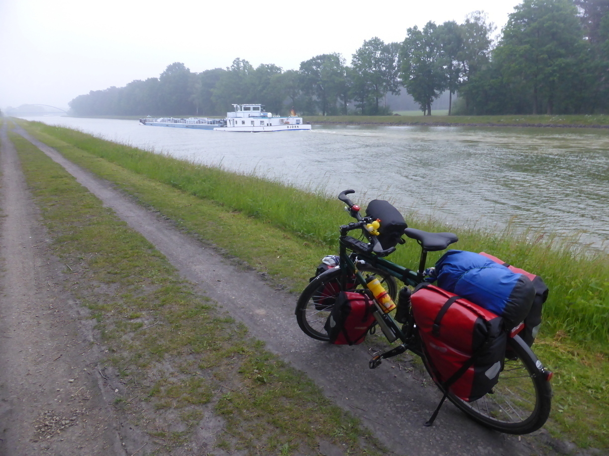
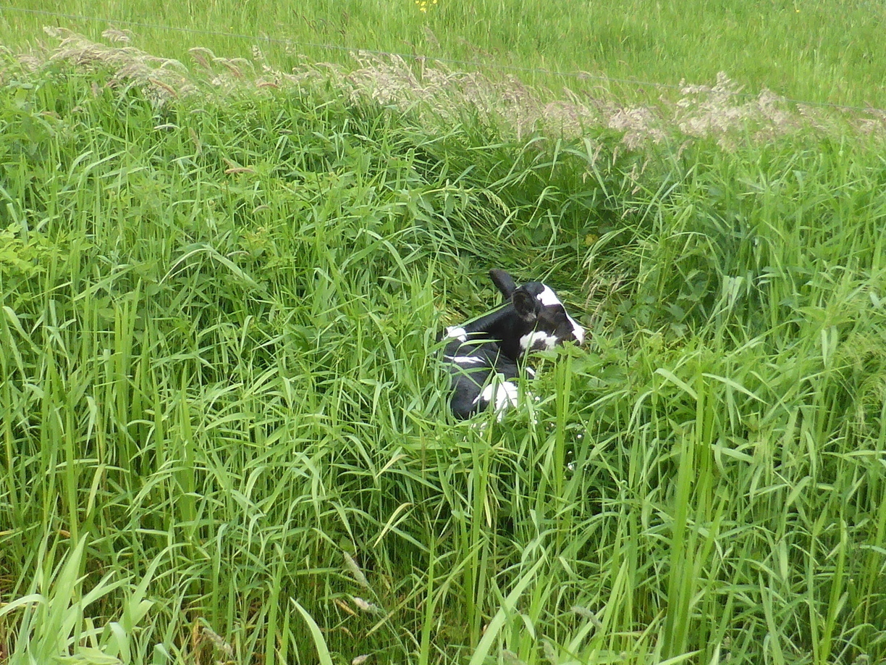

Aller Anfang ist schwer
Inzwischen bin ich fast eine Woche unterwegs und komme nur sehr langsam dazu Einträge für das Blog zu schreiben. Aber ich nutze jede Gelegenheit bei der es Strom, eine Sitzgelegenheit und Wlan gibt. Gut das es die Freifunk-Initiative gibt :)
Tag 1
Solingen - Witten 65 km
Am ersten Tag ging es zunächst zu Verwandten nach Witten. Dabei wurde ich von meinen Schwestern, Cousine und ein paar Freunden begleitet. Die Strecke führte uns immer schön über alte Bahntrassen. Zunächst die Korkenziehertrasse in Solingen und anschließend die Nordbahntrasse in Wuppertal. Anschließend wurde bei Omma im Garten gegrillt. Nach dem Grillen musste ich mich auch schon von den Mitfahrern verabschieden.
Tag 2
Witten - Münster 98 km
Am Morgen ging es noch in Begleitung von meinem Onkel durch die wunderschöne Ruhrgebietsmetropole Dortmund. Insbesondere die Nordstadt mit zahlosen Scherben auf den Wegen eine Prüfung für die Reifen. Aber dank meines ortskundigen Begleiters waren wir schnell im Grünen. Bei einer ausgiebigen Mittagspause am Kanal, sahen wir eine Gruppe Aussteiger mit ihren Booten entlangtuckern. Beim Abgebildeten Boot gefiehl mit insbesondere der Name. Nach der Pause gingen wir getrennte Wege.
Als ich dann so alleine in die grobe Richtung Münster unterwegs war, kamen mir schon Zweifel an meinem Vorhaben. Alleine vergehen die Kilometer dann doch langsamer als wenn man Jemanden zum Reden hat. Allen Zweifeln zum Trotz habe ich mich dennoch bis Münster gekämpft. Ab Münster ging es dann am Dortmund-Ems-Kanal entlang. Ein Stück nach Münster hab ich dann angefangen nach einem Platz zum Zelten zu suchen. Nach einer Weile enteckte ich ein kleines Waldstück direkt am Rande des Weges, der immer noch dem Kanal folgte. Münster war inzwischen weit genug weg, sodass nur noch spärlich Menschen unterwegs waren. Nach einer kurzen Pause wurde dann schnell das Zelt errichtet. Natürlich habe ich kurz darauf bei einem Spaziergang am Kanal ca. 50 Meter weiter einen schöneren Platz auf einer Wiese entdeckt. Aber mir fehlte dann die Lust das Zelt abzubauen und an anderer Stelle erneut zu errichten.
Tag 3
Münster - Dümmer See 95 km
Am nächsten Morgen wurde ich zeitig wach, sodass ich bereits um kurz nach 7 Uhr abfahrtbereit war.  Im nächsten Ort wurde dann schnell das Smartphone gezückt und, getrieben vom Gedanken an eine Dusche, nach einem Campingplatz für die nächste Nacht gesucht. Schnell die Addresse ins Navi eingegeben und weiter.
An einer Stelle blickte ich ratlos aufs Navi, bis ich feststellte, dass der Radweg hier tatsächlich durch die Bahnhofsunterführung führte. Nach dieser kurzen Unterführungbrechung ging es kurz durch den Teutoburger Wald und anschließend nach Osnabrück.
Kaum in Niedersachsen angekommen folgte natürlich ausschließlich plattes Land und immergleiche Alleen. Das Navi schien meine Missgunst zu spüren und schickte mich kurz vorm Ziel nurnoch über Feldwege um ein wenig Abwechslung zu bringen.
Diese kam dann in Form eines kleinen Kälbchens, welches ich im Vorbeifahren erspähte. Wie ich schnell feststellte hatte sich das Kleine auf die falscheSeite des Zaunes verirrt. Auch zum Weg hin gab es kein dran kommen, da sich zwischen Weg und Wiese ein Graben befand. Dieser war zudem mit Brennnesseln versehen. Kurzzeitig war ich ratlos, wie ich dem Kalb am besten Hilfe zukommen lassen könnte. Um die Dramatik der Situation noch zu steigern hörte ich schon das Gewitter aufziehen. Die Lösung des Problems war recht simpel und erforderte nur einen minimalen Umweg zum nächsten Bauernhof. Dort war auch direkt jemand anzutreffen der wusste, zu dem die Wiese gehörte und mir versicherte er würde sich drum kümmern. Natürlich habe ich bei dem Drama nicht vergessen ein Bild von dem Kleinen zu schießen. 
Anschließend ging es direkt weiter zum Campingplatz am Dümmer See. Kaum war das Zelt aufgebaut fing es auch schon an zu schütten. Also hieß es erstmal um Zelt abwarten und im Internet das Wetter und die weitere Route betrachten. Der Regen hörte aber auch wieder auf, sodass noch ein Spaziergang am See drin war.